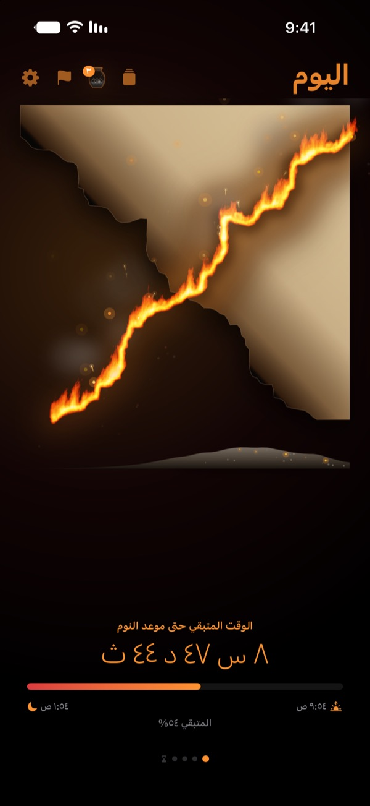
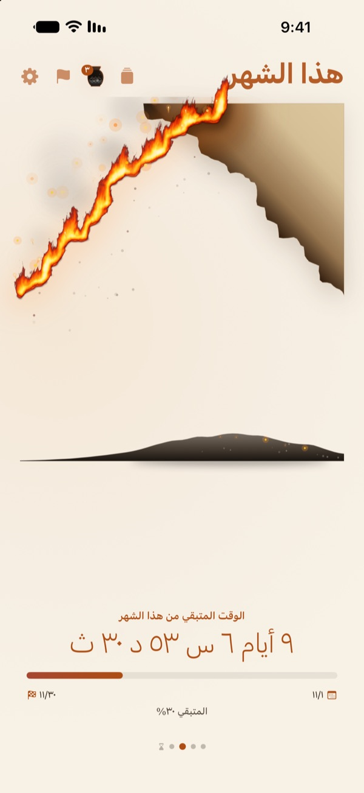
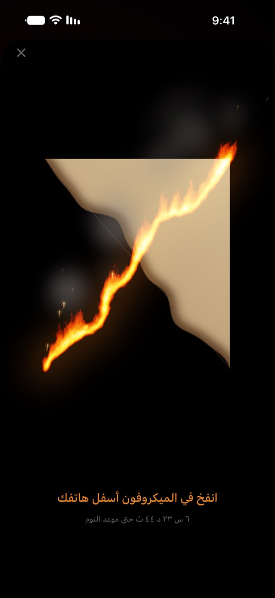
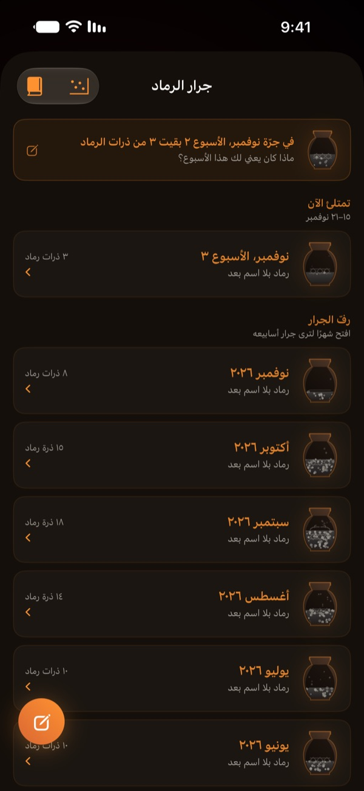

شاهد ما تبقى
من يومك يحترق
المساء الذي يبدو بريئًا كرقم يختلف حين تراه ورقةً مشتعلة. وقبل النوم بنصف ساعة، انفخ على الشاشة لتطفئ اللهب وتختم يومك.
الورقة المشتعلة وطقس النفخ والتأملات كلها مجانية.

جرّب أن تطفئها
حرّك الساعة إلى ما قبل موعد النوم بقليل، ثم اضغط مطولًا على الزر أو انفخ في الميكروفون.
هل رفعت رأسك فجأة فوجدت الساعة منتصف الليل؟
تناولت العشاء، وجلست قليلًا، فإذا باليوم قد انقضى. أرقام الساعة تبدو متشابهة كل مساء، فلا تشعر بالوقت وهو ينفد. الورقة المشتعلة تعرض ما تبقى ورقةً تحترق، فتنتبه قبل أن يتلاشى المساء.
يومك وأسبوعك وعامك يحترق أمامك
من لحظة استيقاظك حتى موعد نومك تحترق الورقة ببطء. وترى بالطريقة نفسها ما تبقى من هذا الأسبوع وهذا الشهر وهذا العام.
أضف هدفًا له تاريخ كموعد نهائي، فيُحسب الوقت المتبقي عليه إلى جانب يومك.

انفخ لتختم يومك
قبل النوم بنصف ساعة، انفخ على الورقة المشتعلة لتطفئ النار. لا نستخدم إلا قوة نفَسك، ولا يُسجَّل أي صوت.
القصاصة التي تبقى تُحفظ لك. اقلبها واكتب على ظهرها سطرًا عن يومك.

الوقت الذي مضى يستقر رمادًا
تأمل ما مضى بسطر واحد، وضعه نقطةً على رسم بمحورين يبيّن كيف قضيت وقتك. تتجمع التأملات في جرار أسبوعية وشهرية، وتعود إليها في كتاب التأملات.
وفي مسار الرماد ترى أين ذهب وقتك عبر رسم للتوزيع وتقويم للجمر.

ثلاث خطوات للبدء
- 1
اضبط وقت الاستيقاظ والنوم
اضغط على الترس في أعلى الشاشة. تشتعل الورقة وتنطفئ وفق هذا الجدول.
- 2
اختر المدة
اسحب بين اليوم والأسبوع والشهر والعام، أو أخفِ الصفحات التي لا تحتاجها من الإعدادات.
- 3
أضف أداة
ضعها على الشاشة الرئيسية أو شاشة القفل لترى الوقت المتبقي دون فتح التطبيق.
أين ترى الوقت المتبقي
- اليوم
- من الاستيقاظ حتى موعد النوم
- الأسبوع · الشهر · العام
- ما تبقى من هذا الأسبوع والشهر والعام
- وقت الفراغ
- لا تحترق ورقة هذا الأسبوع إلا في الساعات التي تخصصها لنفسك (Plus)
- المواعيد النهائية
- الوقت المتبقي حتى تاريخ الهدف. واحد منها مجاني
- أدوات الشاشة الرئيسية
- ورقة اليوم بالأحجام الصغير والمتوسط والكبير، والأسبوع والشهر والعام والمواعيد النهائية بالحجمين الصغير والمتوسط
- أدوات شاشة القفل
- دائرية ومستطيلة وسطرية
- الجزيرة الديناميكية · الأنشطة المباشرة
- قبل النوم بساعة أو طوال اليوم. اختر أو أوقفها من الإعدادات
وسّع الجزيرة الديناميكية لترى الورقة المشتعلة مع العدّ التنازلي كاملًا.
الورقة مجانية، وPlus وPro يفتحان المزيد
مجاني
- أوراق اليوم والأسبوع والشهر والعام
- النفخ لإطفاء اللهب وجمع القصاصات
- التأملات بسطر واحد والجرار وكتاب التأملات
- سؤال الصباح، مع بيانات النوم من صحتي إن شئت
- أدوات الشاشة الرئيسية وشاشة القفل والجزيرة الديناميكية
- موعد نهائي واحد
Plus وPro
- أحرق وقت فراغك وحده
- سمات الورقة: ورق هانجي تحت ضوء القمر، السيلادون، الغروب
- أنواع اللهب: نار هائجة، جمر، شرر
- شارك قصاصاتك بطاقاتٍ وملصقات
- صدّر كتاب تأملاتك بصيغة PDF
- رماد اثني عشر شهرًا
- مواعيد نهائية بلا حدود
- يضم Pro كل ما في Plus مع أوقات عمر بلا حدود وكل ميزات Pro القادمة
اختر اشتراكًا سنويًا أو شراءً لمرة واحدة مدى الحياة. يتجدد الاشتراك تلقائيًا ما لم يُلغَ قبل نهاية المدة بأربع وعشرين ساعة على الأقل.
جهاز جديد؟ اضغط «استعادة المشتريات» في الإعدادات.
أسئلة
تعرض الأداة وقتًا مختلفًا عن التطبيق.
لا يعيد iOS رسم أدوات الشاشة الرئيسية كل ثانية. فتح التطبيق يعيد مزامنتها. ولعدّ تنازلي يتحرك كل ثانية، استخدم الجزيرة الديناميكية والأنشطة المباشرة على شاشة القفل.
النفخ لا يطفئ اللهب.
يمكنك إطفاؤه بدءًا من نصف ساعة قبل موعد النوم. تأكد أن الوصول إلى الميكروفون مسموح، ثم انفخ بثبات في الميكروفون أسفل هاتفك لنحو ثانية. صوت قصير واحد لا يكفي.
هل يُسجَّل صوتي؟
لا. يقيس التطبيق قوة نفَسك فقط، ولا يُسجَّل أي صوت ولا يُحفظ.
ماذا يعرض وأنا نائم؟
بعد موعد النوم يظهر قلب مشتعل يبيّن كم مضى من ليلتك حتى الاستيقاظ. وفي الصباح يسألك هل نمت في موعدك، وإن تأخرت يبدأ يومك بورقة لفحتها النار بقدر تأخرك. وإن ربطت تطبيق صحتي، يعتمد وقت نومك المسجل بدل أن يسألك.
متى تصل الإشعارات؟
قبل موعد النوم بساعة. إن لم يصل شيء، تحقق من الإعدادات ‹ الإشعارات ‹ الورقة المشتعلة.
هل يستهلك البطارية؟
العدّ التنازلي داخل التطبيق يتحرك كل ثانية، أما الأدوات فتتحدث وفق جدول منخفض الطاقة يديره iOS، لذا فالأثر بسيط.
أين تُحفظ بياناتي؟
وقت الاستيقاظ وموعد النوم والمواعيد النهائية والتأملات والجرار تبقى على جهازك. ولا يتلقى المطوّر إلا إحصاءات استخدام مجهولة وتشخيصات الأعطال وأي ملاحظات تختار إرسالها. بلا إعلانات ولا تتبّع.
هل Plus وPro اشتراك؟
يمكنك الاختيار بين اشتراك سنوي وشراء لمرة واحدة مدى الحياة. تُدار الاشتراكات أو تُلغى من إعدادات حسابك في App Store، وعلى جهاز جديد اضغط «استعادة المشتريات» في الإعدادات.
للإبلاغ عن الأخطاء أو اقتراح الميزات أو أي شيء آخر: راسلنا على leeo@kakao.com.